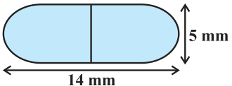
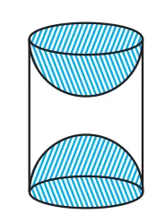

Unless stated otherwise, take \(\pi = \frac{22}{7} \cdot\)
- 1.2 cubes each of volume \(64 cm^{3}\) are joined end to end. Find the surface area of the
resulting cuboid.
- 2.A vessel is in the form of a hollow hemisphere mounted by a hollow cylinder. The
diameter of the hemisphere is 14 cm and the total height of the vessel is 13 cm. Find the inner surface area of the vessel.
- 3.A toy is in the form of a cone of radius 3.5 cm mounted on a hemisphere of same radius.
The total height of the toy is 15.5 cm. Find the total surface area of the toy.
- 4.A cubical block of side 7 cm is surmounted by a hemisphere. What is the greatest
diameter the hemisphere can have? Find the surface area of the solid.
- 5.A hemispherical depression is cut out from one face of a cubical wooden block such
that the diameter l of the hemisphere is equal to the edge of the cube. Determine the surface area of the remaining solid.

- 6.A medicine capsule is in the shape of a
cylinder with two hemispheres stuck to each of its ends (see Fig. 12.10). The length of the entire capsule is 14 mm and the diameter of the capsule is 5 mm. Find its surface area. Fig. 12.10
- 7.A tent is in the shape of a cylinder surmounted by a conical top. If the height and
diameter of the cylindrical part are 2.1 m and 4 m respectively, and the slant height of the top is 2.8 m, find the area of the canvas used for making the tent. Also, find the cost of the canvas of the tent at the rate of ` 500 per \(m^{2}\). (Note that the base of the tent will not be covered with canvas.)
- 8.From a solid cylinder whose height is 2.4 cm and diameter 1.4 cm, a conical cavity of the
same height and same diameter is hollowed out. Find the total surface area of the remaining solid to the nearest \(cm^{2}\).

- 9.A wooden article was made by scooping
out a hemisphere from each end of a solid cylinder, as shown in Fig. 12.11. If the height of the cylinder is 10 cm, and its base is of radius 3.5 cm, find the total